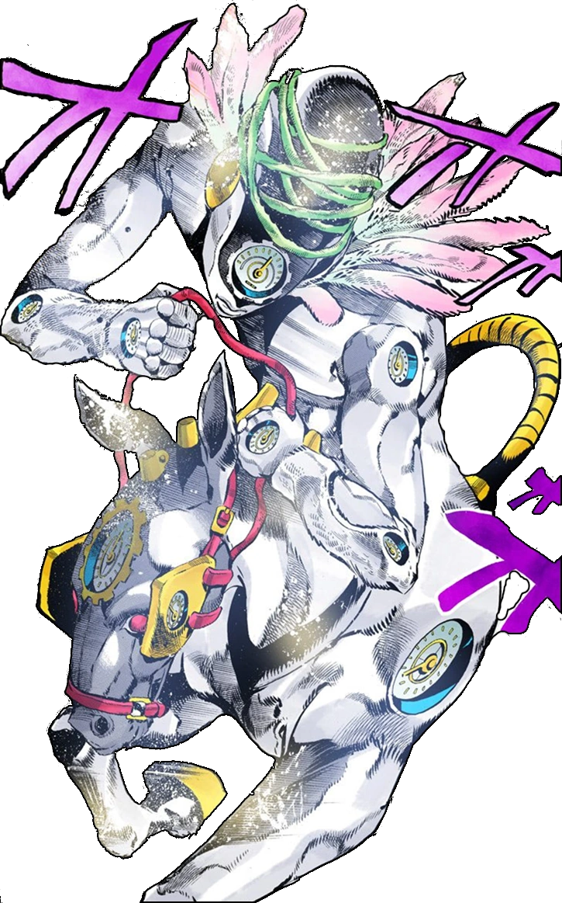
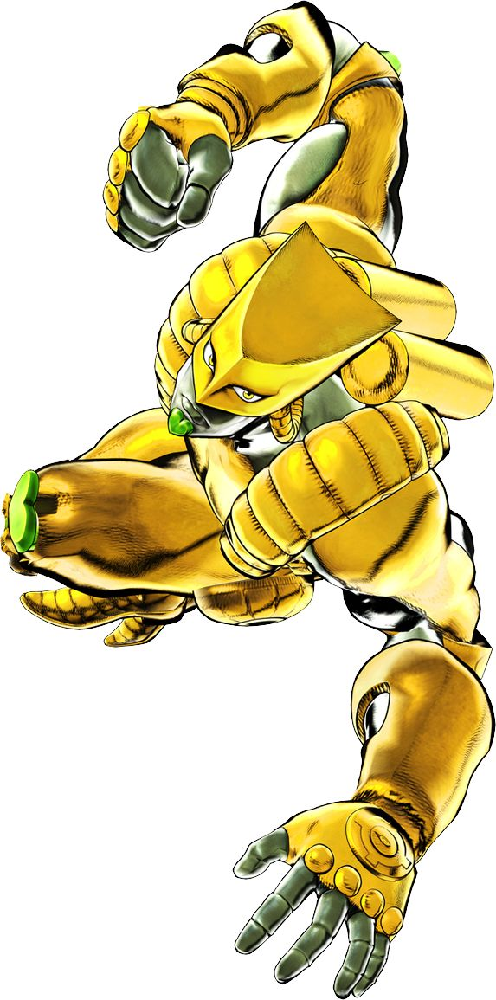
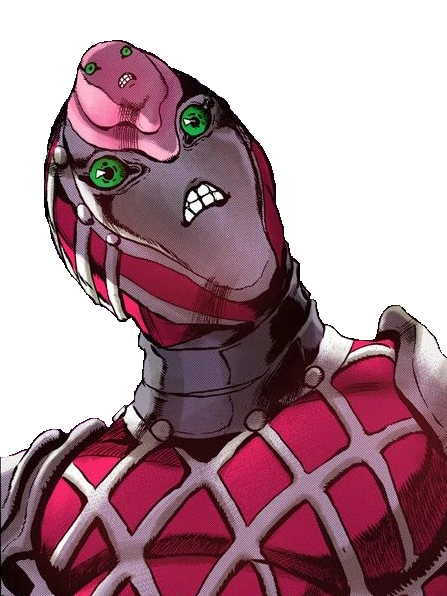
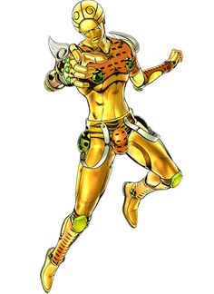
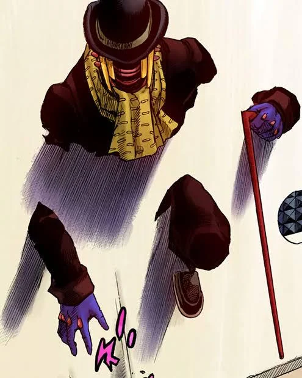

Os Stands são manifestações da energia vital de seus usuários, geralmente representando seus poderes e suas habilidades. Cada Stand possui características próprias, podendo ter capacidades físicas extraordinárias ou habilidades especiais que tornam as batalhas imprevisíveis.
Usuário: Enrico Pucci

Made in Heaven possui uma habilidade extraordinária de acelerar o tempo. Essa capacidade faz com que o tempo passe cada vez mais rápido para o universo, tornando esse Stand extremamente poderoso e difícil de enfrentar.
Usuário: DIO

The World é um Stand conhecido principalmente por sua capacidade de parar o tempo por alguns segundos. Durante esse período, seu usuário consegue se movimentar enquanto os demais ficam incapazes de agir, tornando essa habilidade uma grande vantagem em combate.
Usuário: Diavolo

King Crimson possui a habilidade de apagar um intervalo de tempo e prever acontecimentos por meio de sua habilidade Epitaph. Isso permite que seu usuário antecipe situações e evite consequências, tornando seus movimentos muito difíceis de prever e combater.
Usuário: Giorno Giovanna

Gold Experience Requiem é uma forma evoluída do Stand Gold Experience. Sua habilidade especial pode anular ações e impedir que elas alcancem seus resultados, sendo considerado um dos Stands mais poderosos de todo o universo JoJo.
Usuário: Tooru

Wonder of U possui uma habilidade conhecida como calamidade, que provoca acontecimentos desastrosos contra aqueles que perseguem seu usuário. Sua capacidade faz com que até mesmo ações aparentemente simples possam se tornar perigosas, sendo um Stand extremamente difícil de enfrentar.